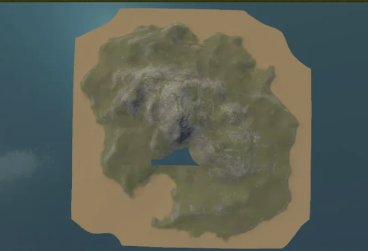
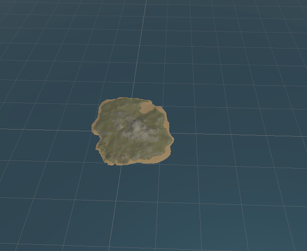
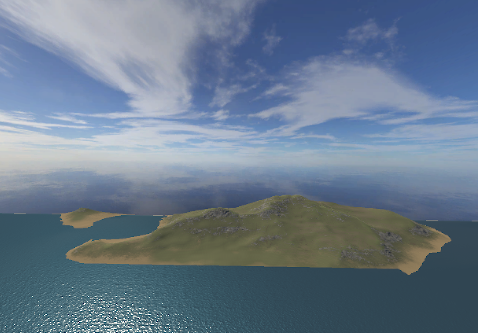
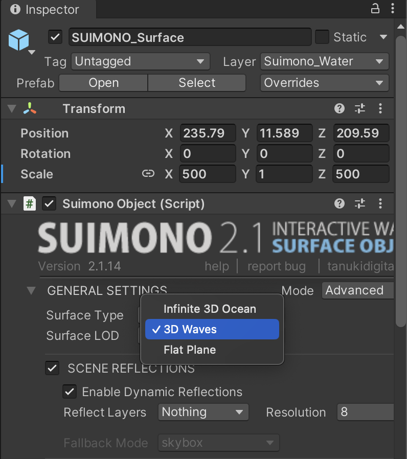
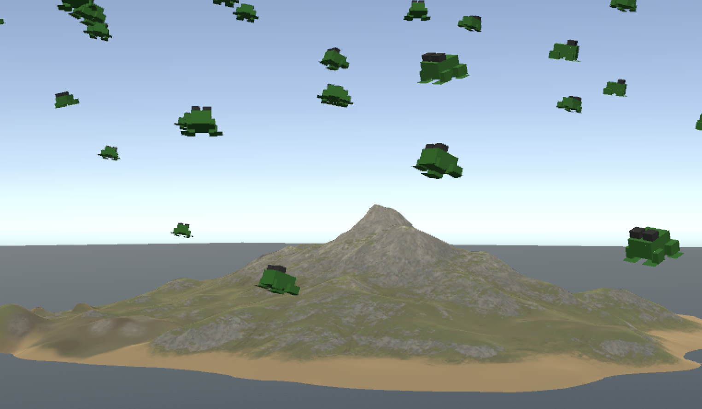
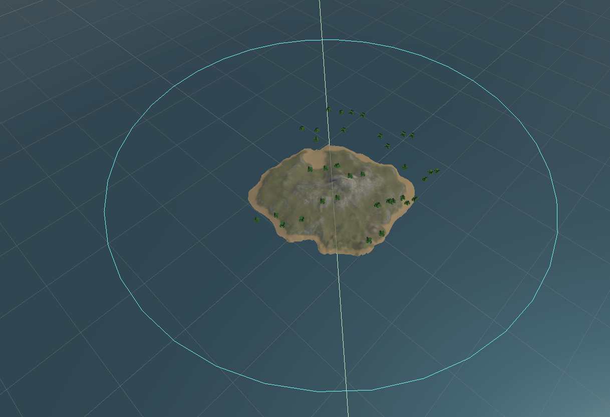

Idea
This project explores climate change and sea level rise through Unity simulation.
The simulation shows a small island being submerged by rising water. Then, it starts raining frogs from the sky.
Process
1.Environment Setup
I want to build an island in the middle of the ocean. Therefore, the shape of the island is particularly important. The terrain started out square, and I pressed the excess under the water to make the island look more realistic.


2.Water Rising System
Getting the water to rise was the first challenge I ran into. My water surface has no dynamics as it rises. The entire surface of the water is like a mirror, complete with up and down translation. This is shown in figure one:

I tried to change the code many times but couldn't achieve the real effect. Until I realized I could switch modes in Suimono and I changed it from 3D Ocean to Waves.

3. Frog System
The rain module I originally wanted to use could not be applied to my version of Unity. To realize the rain idea, I used frogs instead.

4. Camera Animation
For a video subplot, I'm going to make a camera animation. I tried to use Timeline Animation. but I found a tutorial for a camera animation script, and I referred to the tutorial to write a code that goes around the island.

Video
Watch the complete simulation: